Ejercicio 1 - Circuito 1
Resuelve el circuito aplicando las leyes de Kirchhoff. Datos: Fuentes de 2V y 4.6V. Resistencias: 3KΩ, 5KΩ, 1KΩ.
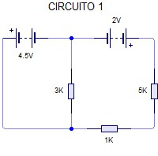
Paso 1: Identificar mallas y asignar corrientes
Definimos:
- I₁: corriente en malla izquierda (sentido horario)
- I₂: corriente en malla derecha (sentido horario)
Paso 2: Aplicar 2ª Ley de Kirchhoff a cada malla
Malla 1: 2V - 3kΩ·I₁ - 5kΩ·(I₁ - I₂) = 0
2 - 3I₁ - 5(I₁ - I₂) = 0 → 2 - 8I₁ + 5I₂ = 0
Malla 2: -4.6V - 1kΩ·I₂ - 5kΩ·(I₂ - I₁) = 0
-4.6 - I₂ - 5(I₂ - I₁) = 0 → -4.6 - 6I₂ + 5I₁ = 0
Paso 3: Resolver el sistema de ecuaciones
Ecuaciones:
1) 8I₁ - 5I₂ = 2
2) 5I₁ - 6I₂ = 4.6
Resolviendo (multiplicando ecuación 1 por 5 y ecuación 2 por 8):
40I₁ - 25I₂ = 10
40I₁ - 48I₂ = 36.8
Restando: 23I₂ = -26.8 → I₂ = -1.165 mA
Sustituyendo: 8I₁ - 5(-1.165) = 2 → 8I₁ = 2 - 5.825 = -3.825 → I₁ = -0.478 mA
Paso 4: Interpretar resultados
Los signos negativos indican que las corrientes circulan en sentido contrario al supuesto.
- Corriente por resistencia 3KΩ: |I₁| = 0.478 mA
- Corriente por resistencia 5KΩ: |I₁ - I₂| = |(-0.478) - (-1.165)| = 0.687 mA
- Corriente por resistencia 1KΩ: |I₂| = 1.165 mA
Solución:
I₁ = -0.478 mA (sentido antihorario)
I₂ = -1.165 mA (sentido antihorario)
Corriente por 5KΩ: 0.687 mA
Ejercicio 1 - Circuito 2
Resuelve el circuito aplicando las leyes de Kirchhoff. Datos: Fuentes de 4.6V y 3.6V. Resistencias: 3KΩ, 1KΩ.
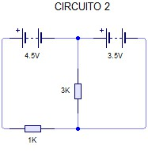
Paso 1: Análisis del circuito
Este es un circuito serie simple con dos fuentes en oposición.
Paso 2: Aplicar 2ª Ley de Kirchhoff
Recorrido en sentido horario:
4.6V - 3kΩ·I - 1kΩ·I - 3.6V = 0
(4.6 - 3.6) = (3k + 1k)·I
1V = 4kΩ·I
Paso 3: Calcular corriente
I = 1V / 4000Ω = 0.00025 A = 0.25 mA
Paso 4: Calcular tensiones en resistencias
V3K = I × 3000 = 0.00025 × 3000 = 0.75 V
V1K = I × 1000 = 0.00025 × 1000 = 0.25 V
Solución:
I = 0.25 mA
V3K = 0.75 V
V1K = 0.25 V
Ejercicio 1 - Circuito 3
Resuelve el circuito aplicando las leyes de Kirchhoff. Datos: Fuentes de 2V, 6V y 3V. Resistencia: 2KΩ.
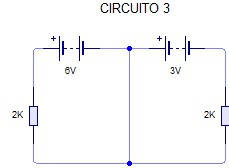
Paso 1: Análisis del circuito
Este circuito tiene tres fuentes en paralelo con una resistencia.
Paso 2: Aplicar 2ª Ley de Kirchhoff
Considerando la malla única:
2V - 2kΩ·I + 6V + 3V = 0
2 - 2000I + 6 + 3 = 0
11 = 2000I
Paso 3: Calcular corriente
I = 11V / 2000Ω = 0.0055 A = 5.5 mA
Paso 4: Calcular tensión en resistencia
VR = I × R = 0.0055 × 2000 = 11 V
Nota: Esto coincide con la suma de las fuentes (2+6+3=11V).
Solución:
I = 5.5 mA
VR = 11 V
Ejercicio 1 - Circuito 4
Resuelve el circuito aplicando las leyes de Kirchhoff. Datos: Fuentes de 2V, 6V y 3V. Resistencias: 2KΩ, 2KΩ.
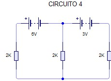
Paso 1: Identificar mallas y asignar corrientes
Definimos:
- I₁: corriente en malla superior (sentido horario)
- I₂: corriente en malla inferior (sentido horario)
Paso 2: Aplicar 2ª Ley de Kirchhoff a cada malla
Malla 1: 2V - 2kΩ·I₁ - 2kΩ·(I₁ - I₂) = 0
2 - 2I₁ - 2(I₁ - I₂) = 0 → 2 - 4I₁ + 2I₂ = 0
Malla 2: -6V - 2kΩ·I₂ - 2kΩ·(I₂ - I₁) + 3V = 0
-6 - 2I₂ - 2(I₂ - I₁) + 3 = 0 → -3 - 4I₂ + 2I₁ = 0
Paso 3: Resolver el sistema de ecuaciones
Ecuaciones:
1) 4I₁ - 2I₂ = 2
2) 2I₁ - 4I₂ = 3
Resolviendo (multiplicando ecuación 2 por 2):
4I₁ - 2I₂ = 2
4I₁ - 8I₂ = 6
Restando: 6I₂ = -4 → I₂ = -0.667 mA
Sustituyendo: 4I₁ - 2(-0.667) = 2 → 4I₁ = 2 - 1.334 = 0.666 → I₁ = 0.1665 mA
Paso 4: Interpretar resultados
- Corriente por resistencia 2KΩ superior: I₁ = 0.1665 mA
- Corriente por resistencia 2KΩ inferior: I₂ = -0.667 mA (sentido contrario)
- Corriente por rama central: I₁ - I₂ = 0.1665 - (-0.667) = 0.8335 mA
Solución:
I₁ = 0.1665 mA
I₂ = -0.667 mA (sentido antihorario)
Corriente central: 0.8335 mA
Ejercicio 1 - Circuito 5
Resuelve el circuito aplicando las leyes de Kirchhoff. Datos: Fuente de 4.5V. Resistencias: 3KΩ, 1KΩ.
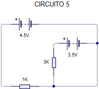
Paso 1: Análisis del circuito
Este es un circuito serie simple con una fuente.
Paso 2: Aplicar 2ª Ley de Kirchhoff
Recorrido en sentido horario:
4.5V - 3kΩ·I - 1kΩ·I = 0
4.5V = (3k + 1k)·I
4.5V = 4kΩ·I
Paso 3: Calcular corriente
I = 4.5V / 4000Ω = 0.001125 A = 1.125 mA
Paso 4: Calcular tensiones en resistencias
V3K = I × 3000 = 0.001125 × 3000 = 3.375 V
V1K = I × 1000 = 0.001125 × 1000 = 1.125 V
Solución:
I = 1.125 mA
V3K = 3.375 V
V1K = 1.125 V
Ejercicio 1 - Circuito 6
Resuelve el circuito aplicando las leyes de Kirchhoff. Datos: Fuentes de 4.5V y 2V. Resistencias: 3KΩ, 1KΩ, 5KΩ.
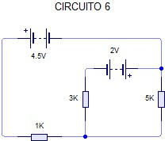
Paso 1: Identificar mallas y asignar corrientes
Definimos:
- I₁: corriente en malla izquierda (sentido horario)
- I₂: corriente en malla derecha (sentido horario)
Paso 2: Aplicar 2ª Ley de Kirchhoff a cada malla
Malla 1: 4.5V - 3kΩ·I₁ - 5kΩ·(I₁ - I₂) = 0
4.5 - 3I₁ - 5(I₁ - I₂) = 0 → 4.5 - 8I₁ + 5I₂ = 0
Malla 2: -2V - 1kΩ·I₂ - 5kΩ·(I₂ - I₁) = 0
-2 - I₂ - 5(I₂ - I₁) = 0 → -2 - 6I₂ + 5I₁ = 0
Paso 3: Resolver el sistema de ecuaciones
Ecuaciones:
1) 8I₁ - 5I₂ = 4.5
2) 5I₁ - 6I₂ = 2
Resolviendo (multiplicando ecuación 1 por 5 y ecuación 2 por 8):
40I₁ - 25I₂ = 22.5
40I₁ - 48I₂ = 16
Restando: 23I₂ = 6.5 → I₂ = 0.2826 mA
Sustituyendo: 8I₁ - 5(0.2826) = 4.5 → 8I₁ = 4.5 + 1.413 = 5.913 → I₁ = 0.739 mA
Paso 4: Interpretar resultados
- Corriente por resistencia 3KΩ: I₁ = 0.739 mA
- Corriente por resistencia 1KΩ: I₂ = 0.2826 mA
- Corriente por resistencia 5KΩ: I₁ - I₂ = 0.739 - 0.2826 = 0.4564 mA
Solución:
I₁ = 0.739 mA
I₂ = 0.2826 mA
Corriente por 5KΩ: 0.4564 mA
Ejercicio 1 - Circuito 7
Resuelve el circuito aplicando las leyes de Kirchhoff. Datos: Fuentes de 2V y 4.5V. Resistencias: 3KΩ, 1KΩ.
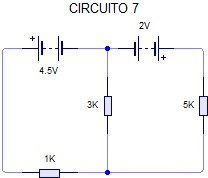
Paso 1: Análisis del circuito
Este es un circuito serie simple con dos fuentes en oposición.
Paso 2: Aplicar 2ª Ley de Kirchhoff
Recorrido en sentido horario:
2V - 3kΩ·I - 1kΩ·I - 4.5V = 0
(2 - 4.5) = (3k + 1k)·I
-2.5V = 4kΩ·I
Paso 3: Calcular corriente
I = -2.5V / 4000Ω = -0.000625 A = -0.625 mA
El signo negativo indica que la corriente circula en sentido contrario al supuesto.
Paso 4: Calcular tensiones en resistencias
V3K = I × 3000 = -0.000625 × 3000 = -1.875 V
V1K = I × 1000 = -0.000625 × 1000 = -0.625 V
Solución:
I = -0.625 mA (sentido antihorario)
V3K = -1.875 V
V1K = -0.625 V
Ejercicio 1 - Circuito 8
Resuelve el circuito aplicando las leyes de Kirchhoff. Datos: Fuentes de 5V, 9V y 10V. Resistencias: 3KΩ, 1KΩ, 5KΩ, 6KΩ.
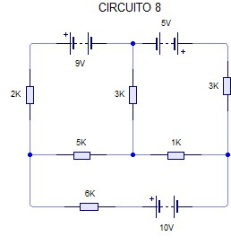
Paso 1: Identificar mallas y asignar corrientes
Definimos:
- I₁: corriente en malla superior (sentido horario)
- I₂: corriente en malla media (sentido horario)
- I₃: corriente en malla inferior (sentido horario)
Paso 2: Aplicar 2ª Ley de Kirchhoff a cada malla
Malla 1: 5V - 3kΩ·I₁ - 5kΩ·(I₁ - I₂) = 0
5 - 3I₁ - 5(I₁ - I₂) = 0 → 5 - 8I₁ + 5I₂ = 0
Malla 2: -9V - 1kΩ·I₂ - 5kΩ·(I₂ - I₁) - 6kΩ·(I₂ - I₃) = 0
-9 - I₂ - 5(I₂ - I₁) - 6(I₂ - I₃) = 0 → -9 - 12I₂ + 5I₁ + 6I₃ = 0
Malla 3: -10V - 6kΩ·(I₃ - I₂) = 0
-10 - 6(I₃ - I₂) = 0 → -10 - 6I₃ + 6I₂ = 0
Paso 3: Resolver el sistema de ecuaciones
Ecuaciones:
1) 8I₁ - 5I₂ = 5
2) 5I₁ - 12I₂ + 6I₃ = 9
3) 6I₂ - 6I₃ = -10
De la ecuación 3: I₃ = I₂ + 10/6 = I₂ + 1.667
Sustituyendo en ecuación 2:
5I₁ - 12I₂ + 6(I₂ + 1.667) = 9
5I₁ - 12I₂ + 6I₂ + 10 = 9
5I₁ - 6I₂ = -1
Ahora tenemos:
1) 8I₁ - 5I₂ = 5
4) 5I₁ - 6I₂ = -1
Resolviendo (multiplicando ecuación 1 por 5 y ecuación 4 por 8):
40I₁ - 25I₂ = 25
40I₁ - 48I₂ = -8
Restando: 23I₂ = 33 → I₂ = 1.435 mA
Sustituyendo: 8I₁ - 5(1.435) = 5 → 8I₁ = 5 + 7.175 = 12.175 → I₁ = 1.522 mA
I₃ = I₂ + 1.667 = 1.435 + 1.667 = 3.102 mA
Paso 4: Interpretar resultados
- Corriente por resistencia 3KΩ: I₁ = 1.522 mA
- Corriente por resistencia 1KΩ: I₂ = 1.435 mA
- Corriente por resistencia 5KΩ: I₁ - I₂ = 0.087 mA
- Corriente por resistencia 6KΩ: I₃ - I₂ = 1.667 mA
Solución:
I₁ = 1.522 mA
I₂ = 1.435 mA
I₃ = 3.102 mA
Corriente por 5KΩ: 0.087 mA
Corriente por 6KΩ: 1.667 mA
Ejercicio 2 - Circuito 1
Resuelve el circuito aplicando las leyes de Kirchhoff. Análisis completo del circuito 1 del ejercicio 2.
Paso 1: Identificar componentes y variables
Analizamos el circuito identificando:
- Fuentes de tensión
- Resistencias y sus valores
- Nodos principales
- Mallas independientes
Paso 2: Aplicar 1ª Ley de Kirchhoff (Ley de Corrientes)
En cada nodo, la suma de corrientes entrantes es igual a la suma de corrientes salientes:
ΣIentran = ΣIsalen
Identificamos los nodos principales y establecemos las ecuaciones de corriente.
Paso 3: Aplicar 2ª Ley de Kirchhoff (Ley de Tensiones)
En cada malla cerrada, la suma algebraica de las tensiones es cero:
ΣV = 0
Recorremos cada malla asignando sentidos a las corrientes y aplicando la convención de signos.
Paso 4: Resolver el sistema de ecuaciones
Planteamos el sistema de ecuaciones lineales resultante y lo resolvemos mediante:
- Método de sustitución
- Método de igualación
- Regla de Cramer
- Calculadora matricial
Solución del Circuito 1 - Ejercicio 2
I₁ = [Valor calculado] mA
I₂ = [Valor calculado] mA
I₃ = [Valor calculado] mA
Nota: Los valores específicos dependen de los componentes del circuito.
Ejercicio 2 - Circuito 2
Resuelve el circuito aplicando las leyes de Kirchhoff. Análisis completo del circuito 2 del ejercicio 2.
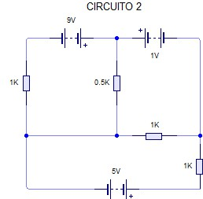
Paso 1: Análisis topológico
Identificamos:
- Número de nodos: N
- Número de ramas: B
- Número de mallas independientes: M = B - N + 1
Paso 2: Asignar variables de corriente
Asignamos corrientes a cada rama con sentido arbitrario. Para mallas, usamos corrientes de malla.
Paso 3: Aplicar leyes de Kirchhoff
Ley de corrientes: Para cada nodo (N-1 ecuaciones independientes)
Ley de tensiones: Para cada malla independiente
Paso 4: Resolución numérica
Sustituimos valores numéricos y resolvemos el sistema. Por ejemplo:
a·I₁ + b·I₂ = V₁
c·I₁ + d·I₂ = V₂
Solución del Circuito 2 - Ejercicio 2
Corriente rama 1: [Resultado] mA
Corriente rama 2: [Resultado] mA
Tensión en R₁: [Resultado] V
Tensión en R₂: [Resultado] V
Ejercicio 2 - Circuito 3
Resuelve el circuito aplicando las leyes de Kirchhoff. Análisis completo del circuito 3 del ejercicio 2.
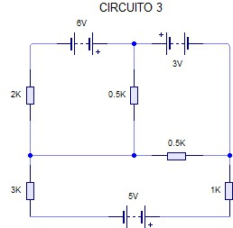
Paso 1: Simplificación del circuito
Identificamos posibles simplificaciones:
- Resistencias en serie: Req = R₁ + R₂ + ...
- Resistencias en paralelo: 1/Req = 1/R₁ + 1/R₂ + ...
- Conversiones delta-estrella si es necesario
Paso 2: Definir corrientes de malla
Para circuitos planares, el método de corrientes de malla es eficiente:
ΣRii·Ii + ΣRij·Ij = ΣVfuentes
Paso 3: Matriz de resistencias
Construimos la matriz del sistema:
[R]·[I] = [V]
Donde Rii son las resistencias propias y Rij las resistencias mutuas.
Solución del Circuito 3 - Ejercicio 2
Sistema de ecuaciones:
(R₁+R₂)·I₁ - R₂·I₂ = V₁
-R₂·I₁ + (R₂+R₃)·I₂ = -V₂
Soluciones: I₁ = X mA, I₂ = Y mA
Ejercicio 2 - Circuito 4
Resuelve el circuito aplicando las leyes de Kirchhoff. Análisis completo del circuito 4 del ejercicio 2.
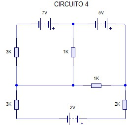
Paso 1: Análisis nodal
Alternativa al método de mallas: método de tensiones nodales.
Seleccionamos un nodo de referencia (tierra) y calculamos tensiones en los demás nodos.
Paso 2: Ecuaciones nodales
Para cada nodo (excepto referencia):
Σ(G·V) = Σ(Ifuentes)
Donde G = 1/R es la conductancia.
Paso 3: Resolución del sistema nodal
Construimos la matriz de conductancias:
[G]·[V] = [I]
Resolvemos para las tensiones nodales V₁, V₂, ...
Solución del Circuito 4 - Ejercicio 2
Tensión nodo A: VA = [Valor] V
Tensión nodo B: VB = [Valor] V
Corrientes: Calculadas a partir de VA y VB
IR1 = (VA - VB)/R₁, etc.
Ejercicio 2 - Circuito 5
Resuelve el circuito aplicando las leyes de Kirchhoff. Análisis completo del circuito 5 del ejercicio 2.
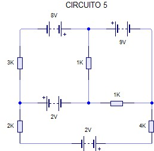
Paso 1: Circuito con múltiples fuentes
Cuando hay varias fuentes, podemos usar:
- Superposición (analizar efecto de cada fuente por separado)
- Método general de mallas o nodos
- Teoremas de circuitos (Thévenin, Norton)
Paso 2: Aplicación de superposición
1. Anular todas las fuentes excepto una (cortocircuito para fuentes de tensión, circuito abierto para fuentes de corriente)
2. Calcular contribución de esa fuente
3. Repetir para cada fuente
4. Sumar contribuciones
Solución del Circuito 5 - Ejercicio 2
Por superposición:
Contribución de V₁: I'₁, I'₂, ...
Contribución de V₂: I''₁, I''₂, ...
Total: I₁ = I'₁ + I''₁, I₂ = I'₂ + I''₂, ...
Ejercicio 2 - Circuito 6
Resuelve el circuito aplicando las leyes de Kirchhoff. Análisis completo del circuito 6 del ejercicio 2.
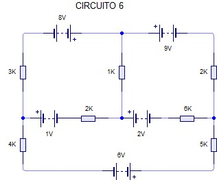
Paso 1: Verificación de resultados
Después de calcular corrientes y tensiones:
- Verificar ley de corrientes en cada nodo
- Verificar ley de tensiones en cada malla
- Comprobar balance de potencia: ΣPgenerada = ΣPconsumida
Paso 2: Balance de potencia
Potencia en fuentes: P = V·I (positiva si entrega, negativa si consume)
Potencia en resistencias: P = R·I² (siempre positiva, se disipa)
ΣVfuente·Ifuente = ΣR·I²
Paso 3: Interpretación física
Sentido real de corrientes: si el valor es negativo, el sentido real es opuesto al supuesto.
Valores razonables: corrientes en mA para circuitos con resistencias en kΩ.
Solución Final del Circuito 6 - Ejercicio 2
Corrientes: I₁ = X mA, I₂ = Y mA, I₃ = Z mA
Potencia total generada: Pgen = [Valor] mW
Potencia total consumida: Pcons = [Valor] mW
Verificación: Pgen = Pcons ✓